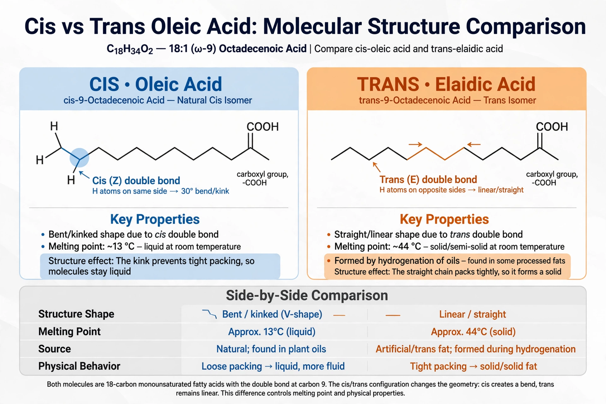

Trans fat, also called trans-unsaturated fatty acids or trans fatty acids, is a type of unsaturated fat that occurs naturally in some foods and is produced industrially in partially hydrogenated oils. Trans fats have the hydrogens on opposite sides of a carbon–carbon double bond (the trans configuration), which straightens the molecule and raises its melting point, making the fat behave more like a saturated fat.

Small amounts of trans fat occur naturally in meat and dairy from ruminants, formed by bacteria in the rumen. Industrial trans fat was created from the early 1900s by partial hydrogenation of vegetable oils — a process patented by Wilhelm Normann in 1902 — producing cheap, shelf-stable shortenings and margarines such as Crisco (introduced 1911).
Trans fat raises LDL ("bad") cholesterol, lowers HDL ("good") cholesterol, and is strongly associated with coronary heart disease, stroke and type 2 diabetes. Unlike other fats, it has no known nutritional benefit, and health authorities consider industrial trans fat unsafe at any level of consumption.
Denmark became the first country to limit industrial trans fat in 2003. The US Food and Drug Administration ruled in 2015 that partially hydrogenated oils are not "generally recognized as safe", effectively banning them from the US food supply by 2018. The World Health Organization's REPLACE initiative (2018) set a goal of eliminating industrial trans fat globally.
From Wikipedia, the free encyclopedia.